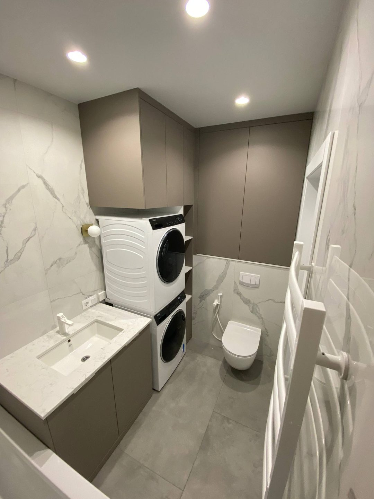
ЖК На Успенской
Паспорт объекта
Площадь: 91,7 м² · Тип: 3-комнатная квартира · Формат: Дизайн + ремонт под ключ · Сегмент: Комфорт
Адрес: Уфа, ул. Коммунистическая, 107
Запрос заказчика
Заказчик хотел светлую семейную квартиру с ощущением «дорогого, но не перегруженного» интерьера: тёплые бежевые стены, лепнина и многоуровневый свет в гостиной, выразительная кухня, уютная спальня с фотообоями и отдельная детская с характером. Важно было заранее согласовать отделку, встроенную мебель и освещение по проекту и получить ремонт под ключ без сюрпризов на финале.
План и описание объекта
На площади 91,7 м² выполнены демонтажные работы, замена электрики и сантехники, выравнивание оснований и чистовая отделка по дизайн-проекту. В гостиной и коридоре — декоративные молдинги, люстры-кольца и бра; на кухне — двухцветные фасады, мраморный фартук и кольцевые светильники; в спальне — рифлёные панели, фотообои и хрустальная люстра; в детской — синие стены и фотопанно с картой мира; в санузле — мраморная плитка, встроенная прачечная и шкафы до потолка. Квартира передана в состоянии, готовом к проживанию.
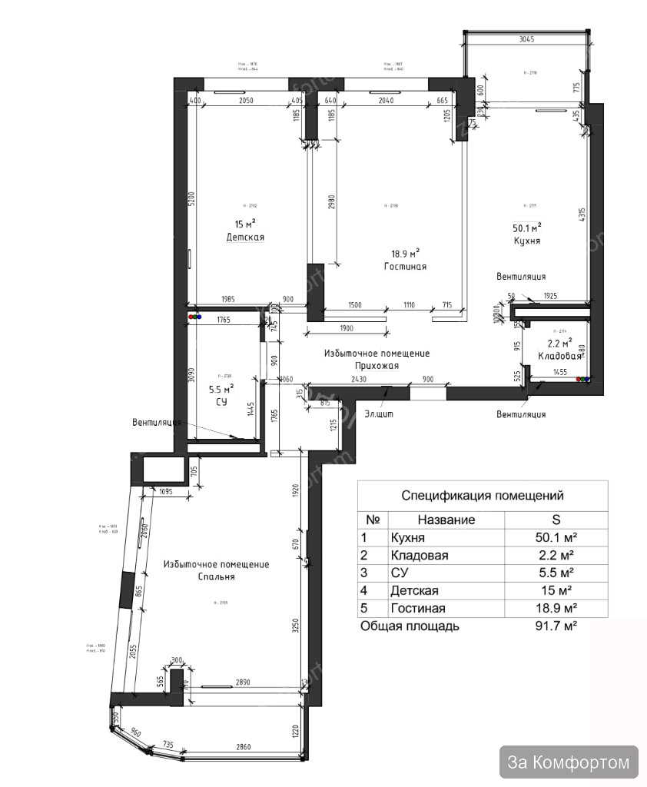
Краткий список работ
- Демонтаж старых покрытий и подготовка оснований
- Полная замена электрики и сантехники
- Штукатурка и выравнивание стен, подготовка под финишную отделку
- Устройство стяжки и выравнивание пола
- Монтаж декоративных молдингов, карнизов и рифлёных панелей
- Чистовая отделка: плитка, ламинат, покраска и фотообои
- Монтаж натяжных потолков, люстр, бра и точечного света
- Изготовление и монтаж встроенной мебели (кухня, шкафы в санузле)
- Установка межкомнатных дверей и плинтусов
- Монтаж кухонного фартука, сантехники и бытовой техники
- Устройство ниши под стиральную и сушильную машины
- Установка розеток, выключателей, кондиционеров и финальная уборка
Проект и реализация
- Современная классика с молдингами и золотым светом
- Кухня с фиолетовым акцентом и мраморным фартуком
- Спальня с фотообоями и рифлёными панелями
- Детская с картой мира и санузел с прачечной
- Квартира передана готовой к проживанию
Галерея
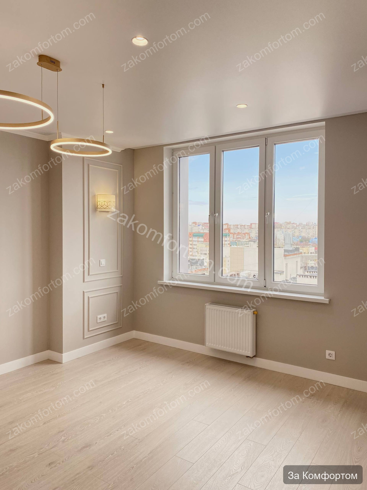
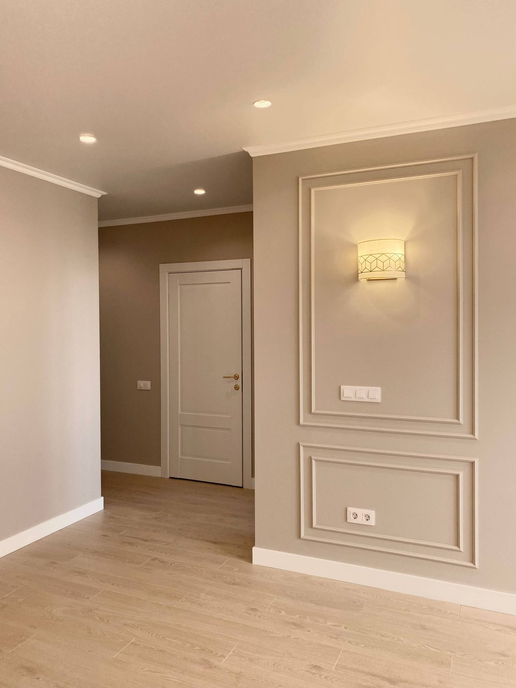
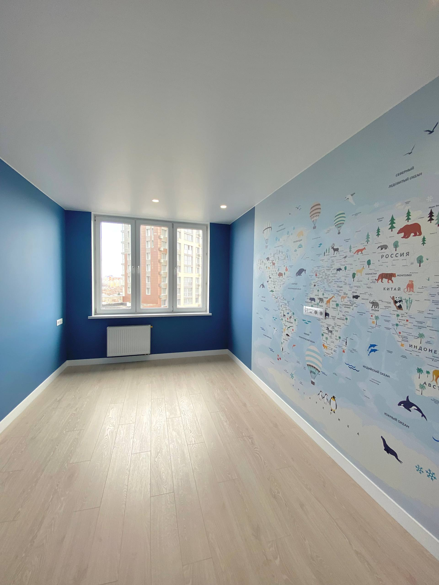
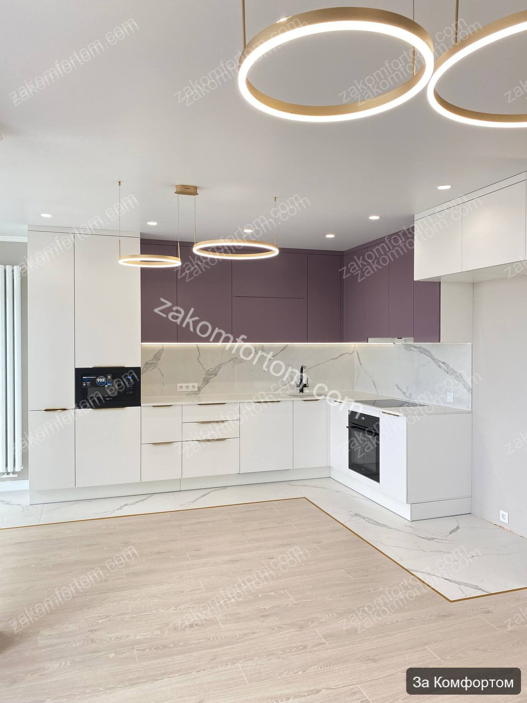
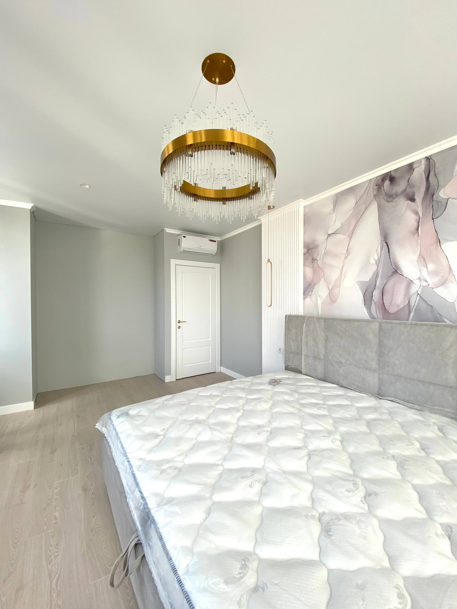
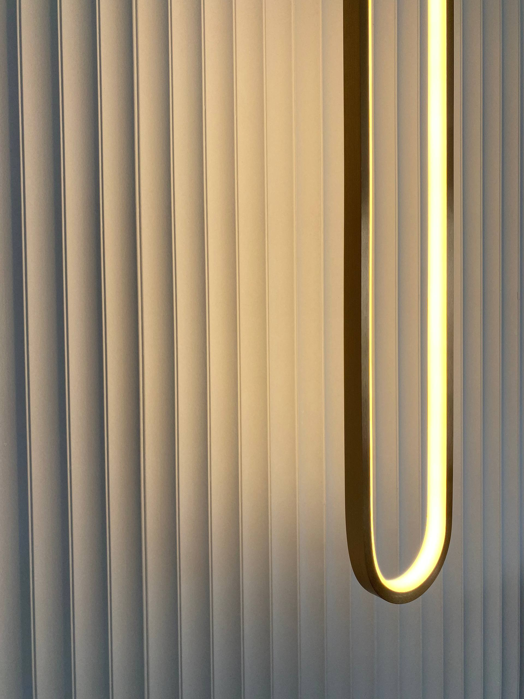
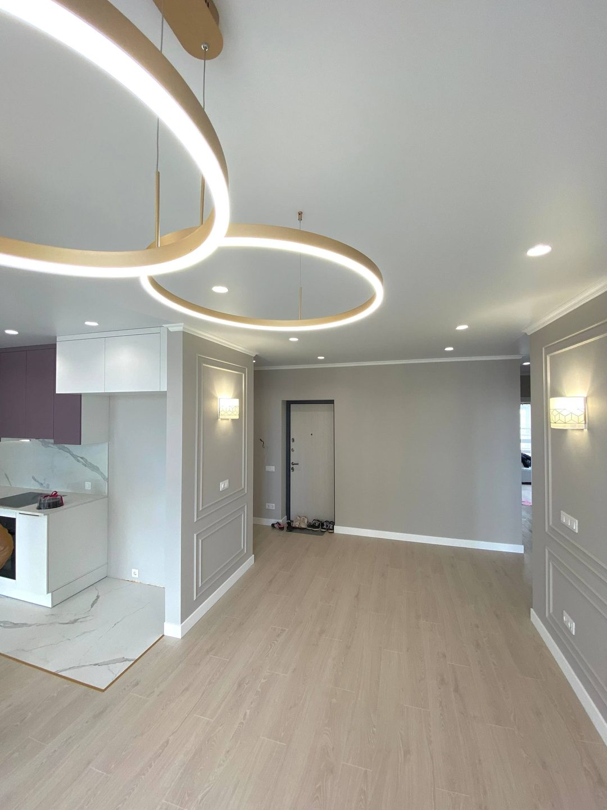
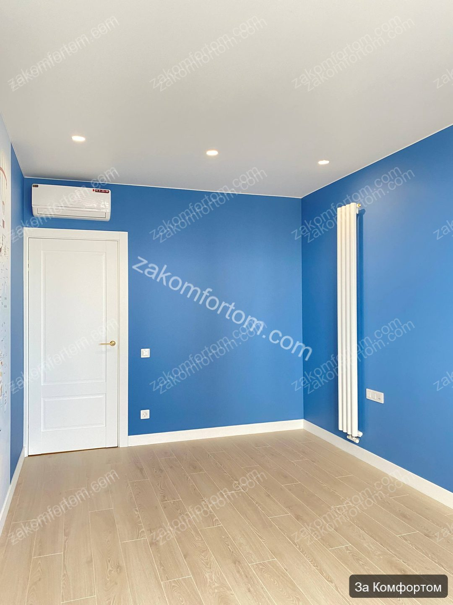
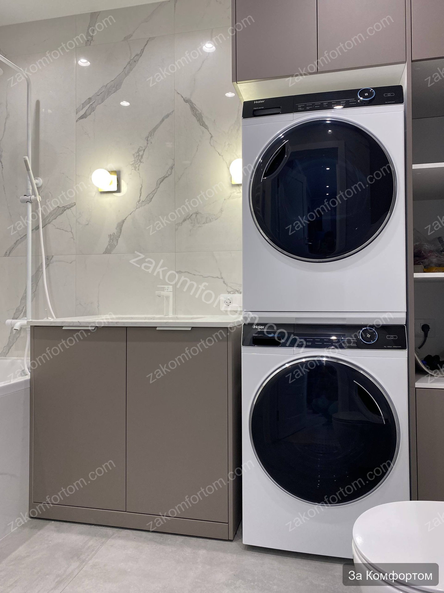
Фото до ремонта
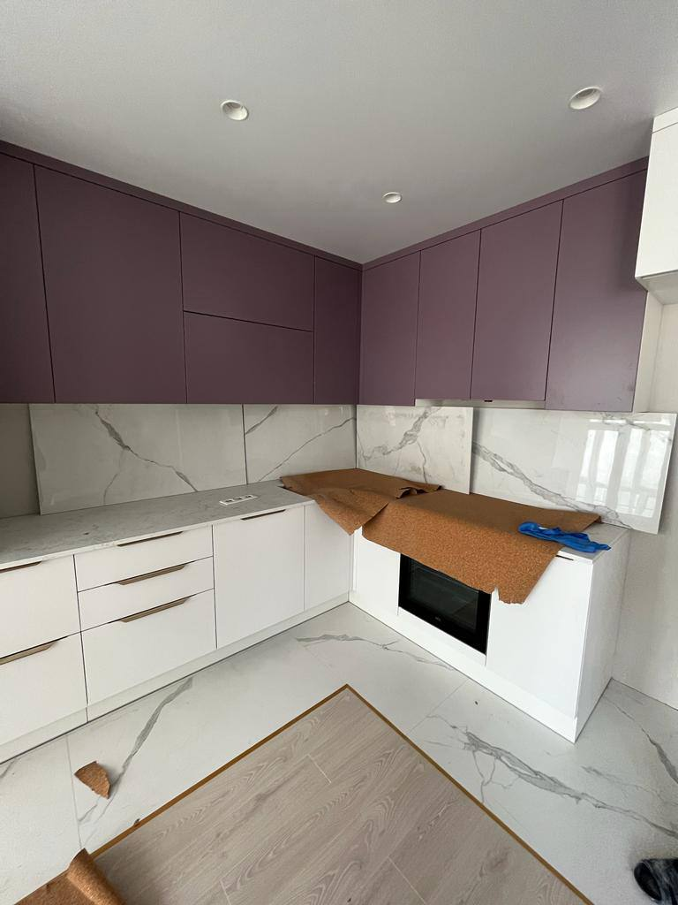
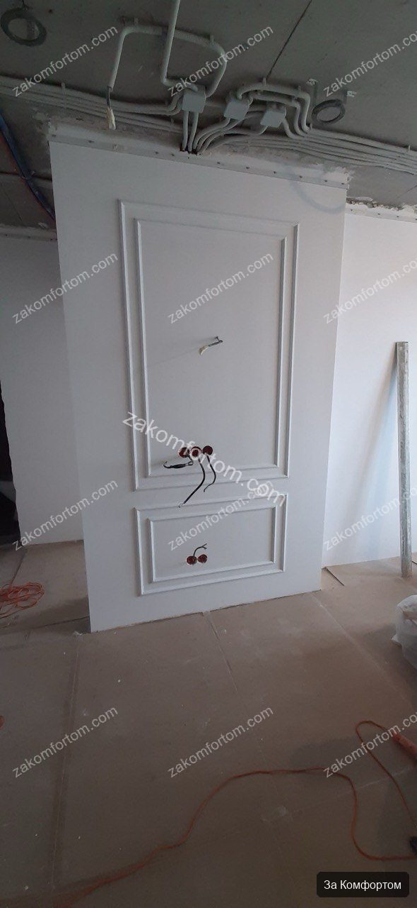
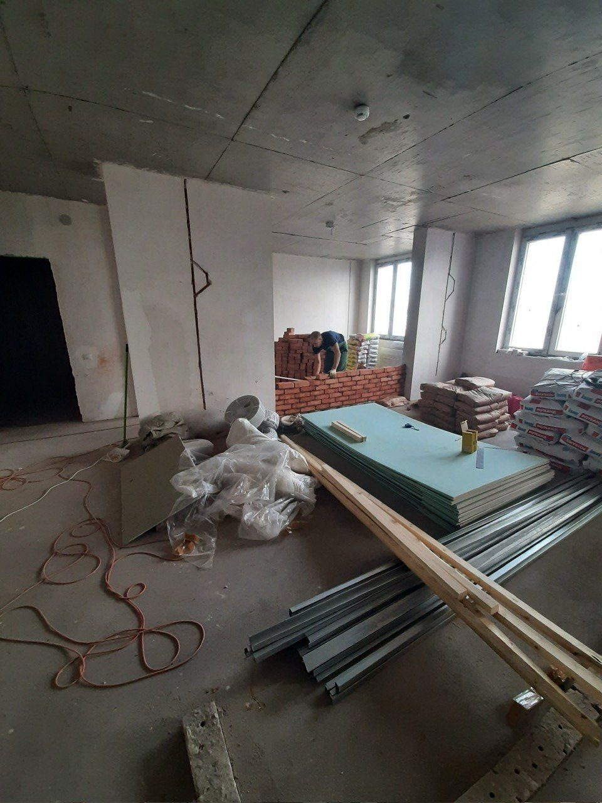
Видео с комментариями эксперта
Если узнаёте себя
- Семья с детьми — нужны и «взрослые» зоны, и детская с характером
- Хотите классику без перегруза: молдинги, свет и встроенная мебель в одном проекте
- Важна кухня, которая выглядит как в дизайн-проекте, а не «потом докупим»
- Сравниваете подрядчиков по реальным объектам в новостройках Уфы